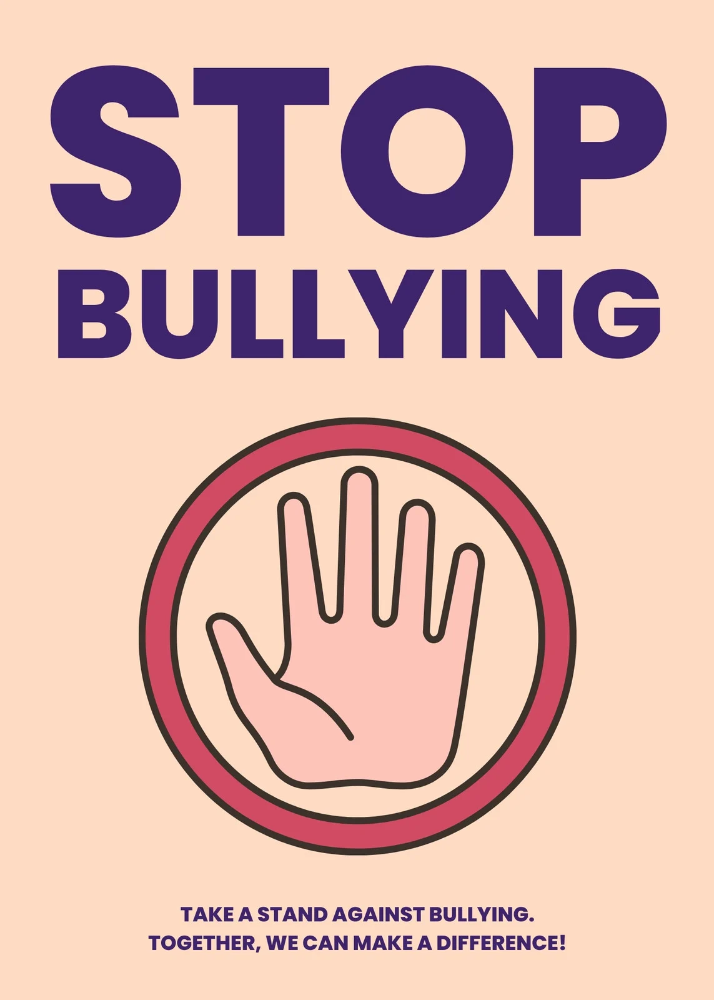

If You Are Being Bullied
- Tell a trusted teacher, counsellor, parent or school leader.
- Keep screenshots or evidence if it happens online.
- Do not respond with insults or violence.
- Stay close to supportive friends in difficult areas.
You Are Not Alone
Speaking up can feel scary, but you have the right to be safe. Asking for help is a sign of strength, not weakness.
If You See Bullying
- Do not join in or laugh along.
- Check on the person being bullied and let them know you care.
- Report what you saw to a teacher or adult, even if you’re not sure it “counts”.
- Support school campaigns and speak up for respect in your friend group.
If You Have Hurt Someone
You can change. Apologise, stop the behaviour, and ask for help from adults to understand why it happened and how to handle conflict differently in the future.